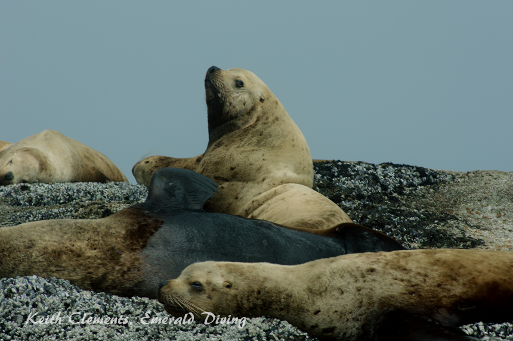
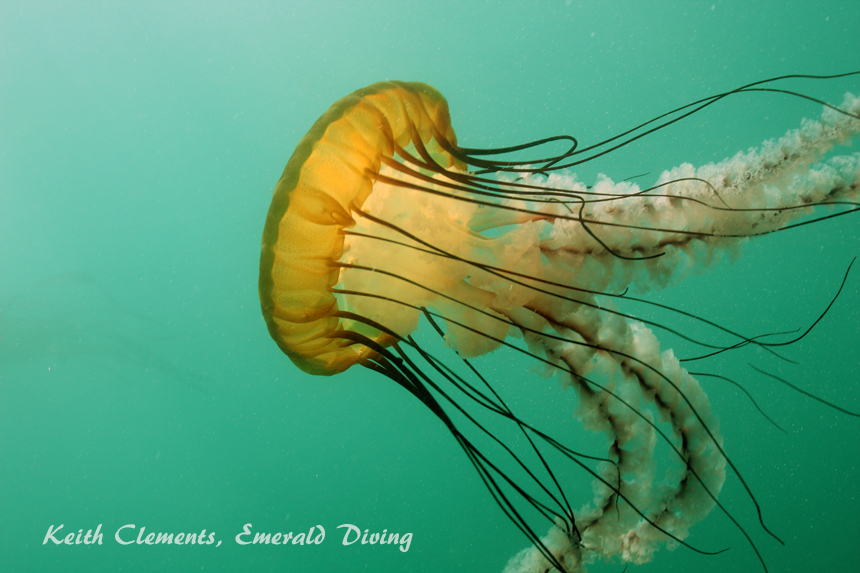
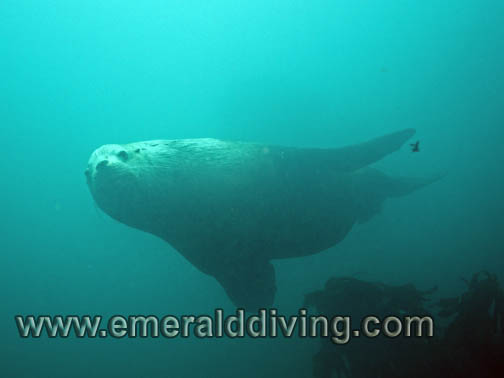
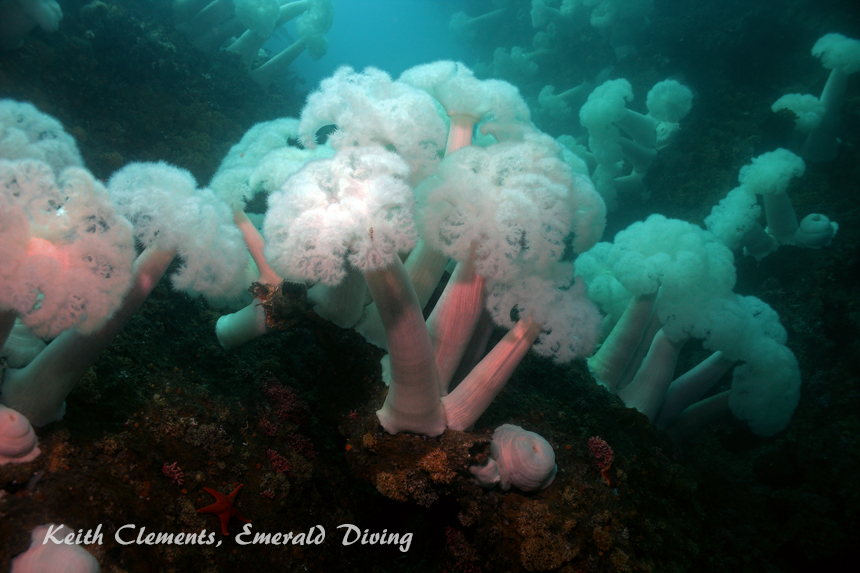
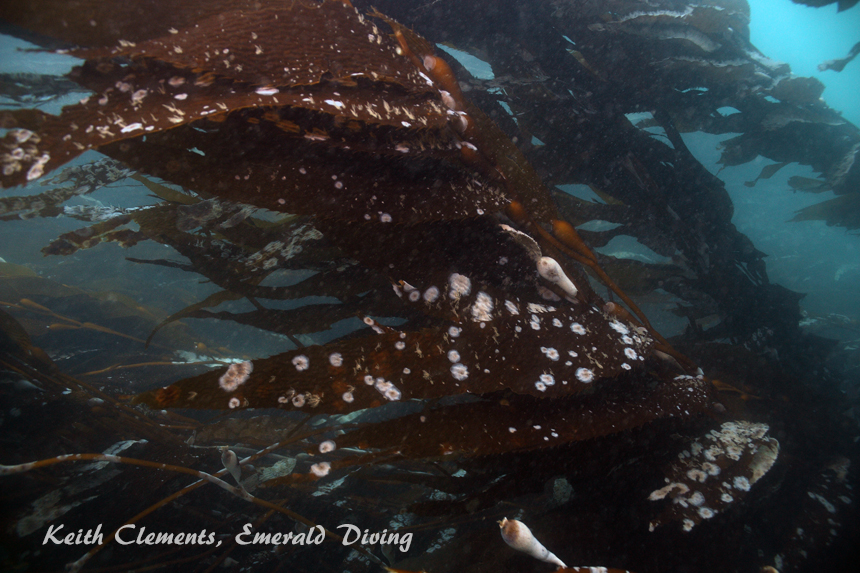

©2010 Emerald Diving, All Rights Reserved
Dive Reports
Emerald Diving
Explore the coastal and inland waters of
Washington and BC
Explore the coastal and inland waters of
Washington and BC
Emerald Diving
Explore the coastal and inland waters of
Washington and BC
Explore the coastal and inland waters of
Washington and BC
Emerald Diving
Explore the coastal and inland waters of
Washington and BC
Explore the coastal and inland waters of
Washington and BC


You know you are a spoiled Pacific Northwest diver when diving Neah Bay becomes routine. With over 125 in this amazing part of the world, I must admit I have almost become numb to some of the splendor that is Neah Bay. Although Neah Bay always holds some surprises, I have fallen into the trap of diving many of the same sites over and over. I have about a dozen sites I regularly dive in this area, and all are spectacular - most of which are now comfortably familiar. Although I vowed to do some exploring this trip, I fell into my old ways and limited my exploring.
We had very good conditions this trip - swell varied from 2 to 4 feet, and occasionally reached 6 feet out around Duncan Rock. Winds were generally mild. We had quite a bit of fog the first day around Tatoosh Island, but morning fog and afternoon sun on the second and third days. The underwater vis in the Strait near Neah Bay was around 20 feet. Out around Tatoosh, vis varied between a respectable 30 feet to a spectacular 40 feet. This is typical July vis for the Cape Flattery area.
We had very good conditions this trip - swell varied from 2 to 4 feet, and occasionally reached 6 feet out around Duncan Rock. Winds were generally mild. We had quite a bit of fog the first day around Tatoosh Island, but morning fog and afternoon sun on the second and third days. The underwater vis in the Strait near Neah Bay was around 20 feet. Out around Tatoosh, vis varied between a respectable 30 feet to a spectacular 40 feet. This is typical July vis for the Cape Flattery area.
Neah Bay: July 17-19 2009

Heavy company at Stellar Rock near Tatoosh Island. We hoped some of these mammoth bulls would join us on our dives, but the best reception I received was a few fly-bys.
Sea nettle jellyfish are invading Neah Bay. I'd never seen a sea nettle at Neah Bay until last year when I saw a few. Now there are thousands of these photogenic invertebrates.

After dropping Rob and Anthony on Waadah Island fingers for a dive, Margaret and I decided to give Third Beach another try - this time with a working camera. The current acted as I would expect this dive as it gently pushed us to the west. We visited the rosy rockfish (finding both of them this time), a number of tiger rockfish, and Margaret even found a shy giant Pacific octopus. We ended the dive doing our safety stop next to a thick aggregation of macrocystis kelp populated with black and blue rockfish. A relaxing diving, and a great way to end the trip.
We then BBQ’d on the boat before heading home. Traffic was less than cooperative, which gave us plenty of time to recap the weekends diving. We rolled in around 11:15 PM, which meant it was after midnight before I had the boat washed and put away in the garage. Although this was a tremendously long day, Neah Bay is still well worth it. However, I vow to do much more exploring during the August trip. Thanks to Rob for sharing the driving duties on this trip, and for preparing the BBQ smorgasbord we enjoyed on the boat each day.
We then BBQ’d on the boat before heading home. Traffic was less than cooperative, which gave us plenty of time to recap the weekends diving. We rolled in around 11:15 PM, which meant it was after midnight before I had the boat washed and put away in the garage. Although this was a tremendously long day, Neah Bay is still well worth it. However, I vow to do much more exploring during the August trip. Thanks to Rob for sharing the driving duties on this trip, and for preparing the BBQ smorgasbord we enjoyed on the boat each day.
The first day of diving found us getting off to a bit of a late start as we did not get into Sekiu until after 11 PM the night before. I began the underwater festivities with a dive at Mushroom Rock, which has become a tradition for me. I was hoping to find another mysterious dusky rockfish at this site. I saw a few dusky-like rockfish when diving here last year, but the local rockfish experts are dubious that what I saw was actually a dusky rockfish as this species is current known to only venture as far south as mid-Vancouver Island. From the photo I took of the fish, the resident rockfish experts suspect the fish I saw is actually a recently discovered species that is somewhat similar to the blue rockfish. My hope was to get more photos of the mystery fish, but it wasn’t to be. However, I did find dozens of wonderful sea nettle jellyfish. I saw a few of these gorgeous jellies in this area last year. This year I encountered dozens of sea nettles in the top 15 feet of water on all my dives around Tatoosh Island. It was an outright jellyfish invasion. Maybe the meek will indeed inherit the Earth.
While manning the boat for the second dive team on their first dive at Slant Rock, I was joined by a female grey whale and her calf. Both came within 20 feet of the boat at times, with the mother repeatedly going vertical with the ends of her flukes in the air as she strained krill from the kelp-laden shallows. She was quite a bit bigger than my 20’ foot boat - I’d estimate she was 30 feet in length. Sometimes the best action at Neah Bay is during the surface interval!
I opted for sea lion dive at Stellar Rock on the northeast side of Tatoosh Island for my second dive of the day. I really wanted to put the 18-55mm lens on my new Canon 450D to work and get some good shots of the
While manning the boat for the second dive team on their first dive at Slant Rock, I was joined by a female grey whale and her calf. Both came within 20 feet of the boat at times, with the mother repeatedly going vertical with the ends of her flukes in the air as she strained krill from the kelp-laden shallows. She was quite a bit bigger than my 20’ foot boat - I’d estimate she was 30 feet in length. Sometimes the best action at Neah Bay is during the surface interval!
I opted for sea lion dive at Stellar Rock on the northeast side of Tatoosh Island for my second dive of the day. I really wanted to put the 18-55mm lens on my new Canon 450D to work and get some good shots of the

Between dives I watched this grey whale and her calf feed. She inverted herself in the water column several times with her tail flukes extending just out of the water as she foraged on the krill in the shallows.

Dinner-plate sized urticina anemones are common throughout Neah Bay's underworld, but not lined up three in a row.

rock's mammalian residents. Although the colony of female sea lions wasn’t present, I was hoping that a few of the bulls or young males on the rocks would join the dive. I stayed on the west side of the rock and did get several “fly-bys” from some big bulls, but they were very stand-offish and shy. A decent dive, but not the activity I hoped for. More encouraging was the robust black rockfish population around Stellar Rock. I found big schools of black rockfish frequenting this site - much bigger than what I have noted in the past. Black rockfish are making a comeback in Puget Sound, and appear to be doing very well out here too. Very cool. What was strange is that the black rockfish didn’t seem the least bit concerned when the sea lions were present. Safety in numbers, I guess.
My third dive of the day was on the western-most tip of Tatoosh Island - a site I call Farwest Ravine. This site is a torrent of current when the tide is flooding, but often manageable on minor ebbs. I had a good dive at this site with the best vis of the day - 40 feet. Although this was not a fish dive, sections of the canyon walls in this area are smothered in colorful invertebrates. This was a take your time and poke around dive.
The next morning found me trying my luck at Stellar Rock again. Rob, Margaret, and Anthony did the first dive of the day and had excellent sea lion interaction on the east side of the rock. I therefore made my way over to the shallow ledge on the east side of the rock and waited. I could actually see several sea lions hit the water from my shallow vantage point. A curious young male joined me for a few minutes, but a very large bull came down and placed itself between the young male and me, then escorted the young male away. It was as if I could hear the bull lecture the youngster What have I told you about playing with those bubble-blowing,slow moving, noisy trouble-makers?".
Not having been on the east side of the rock before, I then explored the depths to the northeast of the rock. The terrain is incredibly rugged and beautiful on the east side. In addition to finding more large schools of black rockfish, I spied a giant Pacific octopus on the hunt below me in 70 feet of water. I carefully placed myself in the octopuses path and it checked both me and my camera out with one of its arms before passing by and continuing on its hunt. I followed it down to 85 feet before breaking off and returning to the west side of the rock. Octopus are just cool. A nice dive indeed.
My third dive of the day was on the western-most tip of Tatoosh Island - a site I call Farwest Ravine. This site is a torrent of current when the tide is flooding, but often manageable on minor ebbs. I had a good dive at this site with the best vis of the day - 40 feet. Although this was not a fish dive, sections of the canyon walls in this area are smothered in colorful invertebrates. This was a take your time and poke around dive.
The next morning found me trying my luck at Stellar Rock again. Rob, Margaret, and Anthony did the first dive of the day and had excellent sea lion interaction on the east side of the rock. I therefore made my way over to the shallow ledge on the east side of the rock and waited. I could actually see several sea lions hit the water from my shallow vantage point. A curious young male joined me for a few minutes, but a very large bull came down and placed itself between the young male and me, then escorted the young male away. It was as if I could hear the bull lecture the youngster What have I told you about playing with those bubble-blowing,slow moving, noisy trouble-makers?".
Not having been on the east side of the rock before, I then explored the depths to the northeast of the rock. The terrain is incredibly rugged and beautiful on the east side. In addition to finding more large schools of black rockfish, I spied a giant Pacific octopus on the hunt below me in 70 feet of water. I carefully placed myself in the octopuses path and it checked both me and my camera out with one of its arms before passing by and continuing on its hunt. I followed it down to 85 feet before breaking off and returning to the west side of the rock. Octopus are just cool. A nice dive indeed.


Although this cabezon is one of the bigger reef dwellers at Stellar Rock, it is dwarfed by the sea lions. I was pleased to see quite a few cabezon this trip - several of which were very large.
A sea lemon nudibranch (anisodoris nobilis) devours a sponge amidst a field of paddle ascidians at Far West Ravine. Note the dark color - this sea slug is usually bright yellow with a few black spots.



This large bull escorted a young sea lion away that had made repeated visits during my dive. Once escorted away, the young sea lion did not come back.
Giant Pacific octopus on the hunt on the east side of Stellar Rock.
My next dive was the north wall at Tatoosh Island. I almost didn’t do this dive as there was quite a bit of current topside. However, my previous two dives at this site revealed no current at depth. That wasn’t the case today. Upon descent, I was whisked off the wall and to the east by the current. Just before I called the dive and ascended, I found sanctuary in a canyon that was tucked out of the current. The canyon bottomed out at about 85 feet and had good invertebrate representation lining the walls on both sides. A large male sea lion briefly stopped by during the latter half of this dive, but like the bulls at Stellar Rock it didn’t stay long. I ended the dive to the east of the wall out of the current.
The final dive of the day was at Duncan Rock. Margaret was diving with me on this dive and new to this site, so I opted to dive the east side of the rock as I am much more familiar with the topography than on the west side. We went in before the current turned and only had mild current to contend with. We weaved through a maze of canyons, walls, and rock formations, all heavily encrusted with paddle ascidians, urticina anemones, red ascidains, proliferating anemones and countless other animals which gave the rugged rocky structure a yellow-orange-red glow. It’s truly like wandering through an enchanted castle. Margaret even found her target species of the day - a large adult Puget Sound king crab. We ended our dive near a large wall and did an open water ascent from 50 feet. I soon as I shot my SMB from 50 feet, I knew the current had changed as my 6’ SMB took off to the west like a kite in a wind storm. We ended up surfacing about 5 minutes later well west of the rock.
Before heading home for the day, Rob and I felt compelled to check out the subterranean cave on Tatoosh Island where we found 2 female elephant seals last year. We cautiously swam into the same cave and immediately noticed fresh drag marks in the sand which were wider than my arm-span. Sure enough, the bull elephant seal had come home to roost. The bull was sacked out sound asleep in a corner of the cave. As Rob and I slowly crept forward to get a pic, the giants eyes opened. After a few quick pics, I couldn’t get out of the cave fast enough. If the elephant seal decided it didn’t want us there, we had nowhere to run in the confines of the cave. Although I was confident I could at least out run Rob, that would only do me good for about 25 yards - then it was back into the water, where the elephant seal is king. Not ideal. Anyway, we escaped with our lives and bowels intact and devoured some BBQ kabobs that Rob prepared near Slant Rock on the way back. Another nice day of diving.
Before heading home for the day, Rob and I felt compelled to check out the subterranean cave on Tatoosh Island where we found 2 female elephant seals last year. We cautiously swam into the same cave and immediately noticed fresh drag marks in the sand which were wider than my arm-span. Sure enough, the bull elephant seal had come home to roost. The bull was sacked out sound asleep in a corner of the cave. As Rob and I slowly crept forward to get a pic, the giants eyes opened. After a few quick pics, I couldn’t get out of the cave fast enough. If the elephant seal decided it didn’t want us there, we had nowhere to run in the confines of the cave. Although I was confident I could at least out run Rob, that would only do me good for about 25 yards - then it was back into the water, where the elephant seal is king. Not ideal. Anyway, we escaped with our lives and bowels intact and devoured some BBQ kabobs that Rob prepared near Slant Rock on the way back. Another nice day of diving.


Orange finger sponge rife with hermit crabs.
Puget Sound king crab taking sanctuary under a rocky shelf.

Young adult cabezon sporting its "younger" orange color scheme.

Slumbering elephant seal in a subterrainian cave. Note its eyes are open.


Tatoosh Island is also a marine bird sanctuary. Tufted puffings (top) and oyster catchers (bottom)
I like to stay close to Neah Bay on get-away day so we can get on the road to head for home at a reasonable time. We therefore ended up doing all our dives on Sunday around Waadah Island. I did two dives at one of my favorite sites, Third Beach Pinnacle. I entered the water with the kelp down on the first dive and experienced a rather terse current headed east along the ridge. I have never had an eastern current on this ridge in over a dozen dives here. Rob, Anthony, and Margaret also experience an east bound current diving Tiger Ridge prior to this dive, which is also an anomaly. Although I have never experienced east-bound currents at either of these sites, I typically dive them on minor exchanges. The difference today was the morning flood was a little stronger than normal, and obviously enough to get the current to head east along the inside of these ridges. The current subsided about half way through my dive. Despite the current, I headed west to a rock where I have been visiting a pair of rosy rockfish for years. Disappointingly, I had bumped my camera lens when installing it in the housing and turned off the auto-focus, so the camera was essentially useless. I did manage to find rosy, who actually came out from under her rock to check me out as I hovered motionless. She came within 12 on my nose - it must have looked strange to any on-lookers to have this diver and bright-orange fish sitting motionless nose-to-nose in the water column. When I returned to the entry point, the current had substantially subsided and the kelp was showing on the surface.



Mushroom Rock with good vis is a hard dive to beat. Giant plumose anemones line the canyon walls a shallower depth.

The seldom seen rosy rockfish. This is the smaller and less colorful of the two rosy rockfish residents at Third Beach Pinnacle.
A China rockfish at Third Beach Pinnacle stands with a dorsal spine at full mast.
Fantastic bedss of macrocystis kelp grace the east end of the Third Beach Dive site.